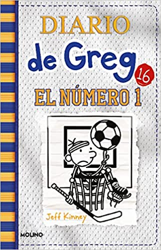
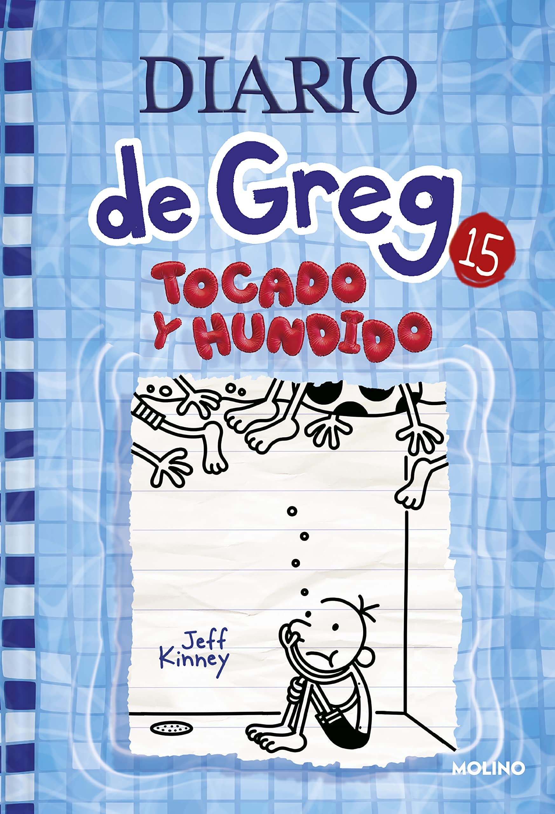
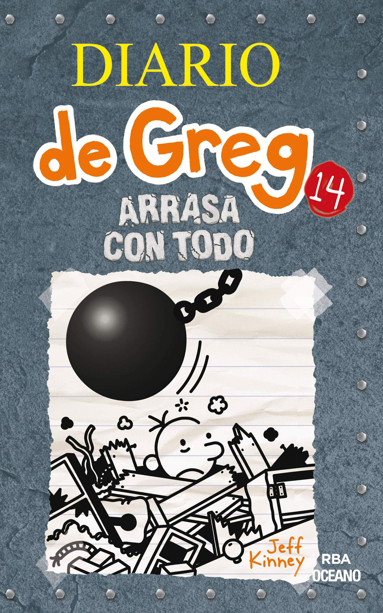
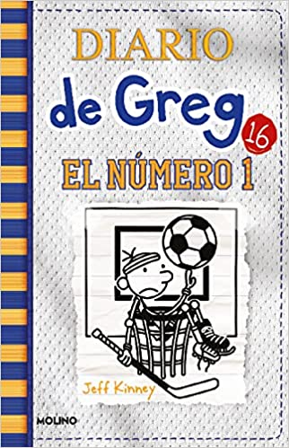
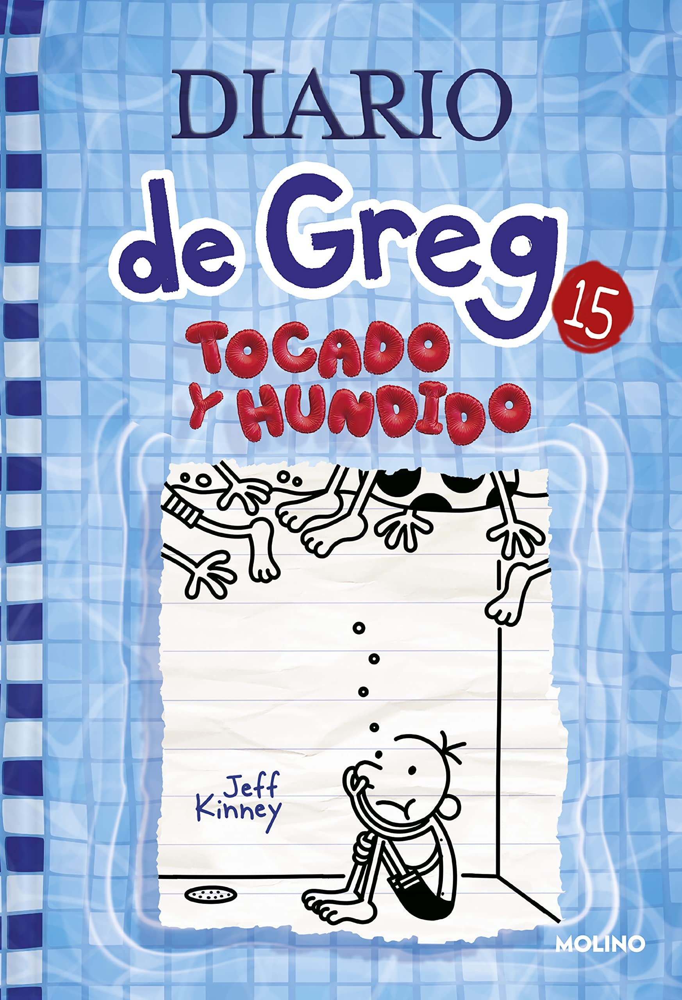
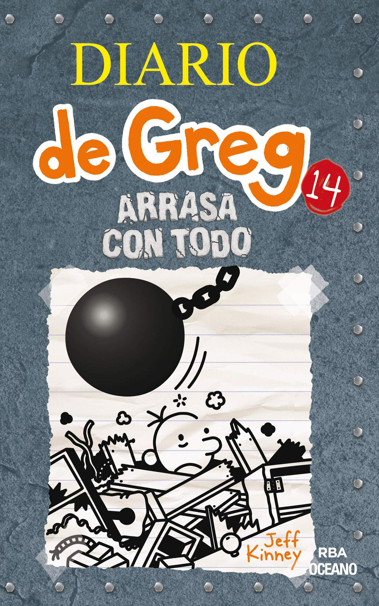

Elegi este personaje por que se me hacen muy chistosos sus libros, en su primer libro, Greg Heffley es un niño que acaba de entrar a la secundaria, con su mejor amigo Rowley Hefferson, las aventuras de Greg heffley en estos libros son muy graciosas por que se pueden comparar con un niño real de su edad, por ejemplo, como su hermano y el se caen de la patada o aventuras con su amigo, y hasta cosas vergonzosas con su familia, ect...
 




